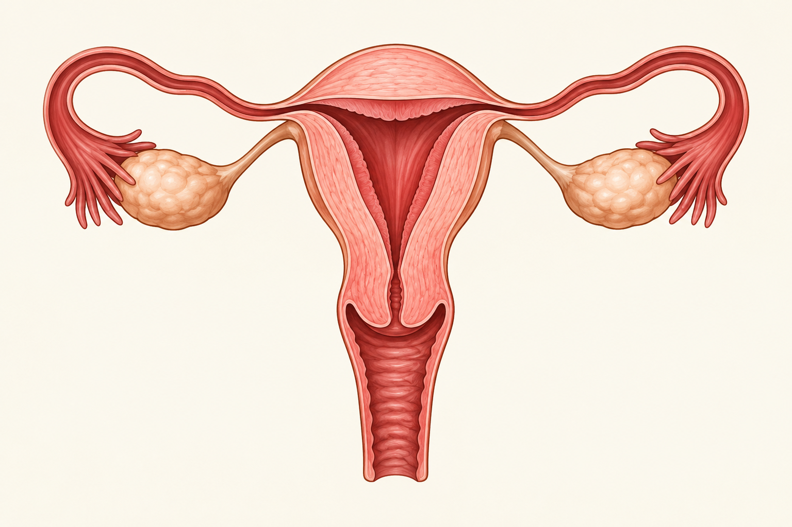

Ovários
São as gônadas femininas. Participam da produção dos ovócitos e liberam hormônios como estrogênio e progesterona, importantes para o ciclo menstrual e outras funções do organismo.
Estruturas que produzem ovócitos, secretam hormônios e participam da fecundação, da menstruação e da gestação.

O sistema reprodutor feminino inclui órgãos internos, como ovários e útero, e estruturas externas que protegem a entrada do sistema genital.
São as gônadas femininas. Participam da produção dos ovócitos e liberam hormônios como estrogênio e progesterona, importantes para o ciclo menstrual e outras funções do organismo.
Também chamadas de trompas de Falópio, conduzem o ovócito em direção ao útero. A fecundação costuma ocorrer em uma das tubas uterinas.
Órgão muscular onde pode ocorrer a implantação do embrião e o desenvolvimento da gestação. Sua camada interna, o endométrio, muda ao longo do ciclo menstrual.
Revestimento interno do útero que se torna mais espesso durante o ciclo. Quando não ocorre gestação, parte desse revestimento é eliminada na menstruação.
Parte inferior e estreita do útero que se comunica com a vagina. O muco cervical varia durante o ciclo e influencia a passagem dos espermatozoides.
Canal muscular que liga o colo do útero ao exterior do corpo. Participa da menstruação, do parto vaginal e da relação sexual.
Nome dado ao conjunto das estruturas genitais externas, incluindo os lábios e o clitóris. O clitóris possui muitas terminações nervosas e é relacionado à sensação de prazer.
O ciclo menstrual é regulado por variações hormonais e pode apresentar diferenças de duração entre pessoas e entre ciclos da mesma pessoa. Em termos gerais, inclui o desenvolvimento de folículos nos ovários, a ovulação e mudanças no endométrio. Se não houver gestação, ocorre a menstruação, iniciando um novo ciclo.
Parte do endométrio é eliminada.
Um folículo amadurece no ovário e o endométrio volta a crescer.
Um ovócito é liberado pelo ovário.
Hormônios preparam o endométrio; sem gestação, o ciclo recomeça.
A duração e os sintomas menstruais variam. Em caso de dor intensa, sangramento muito abundante ou dúvidas sobre a saúde, é importante procurar um profissional de saúde.